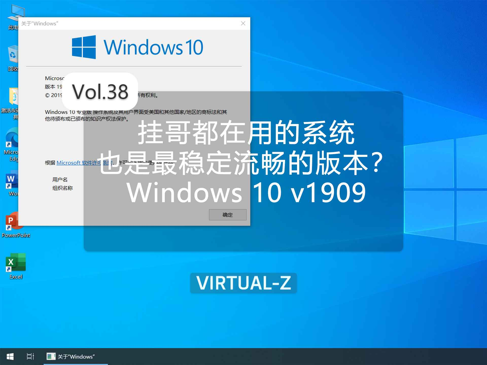
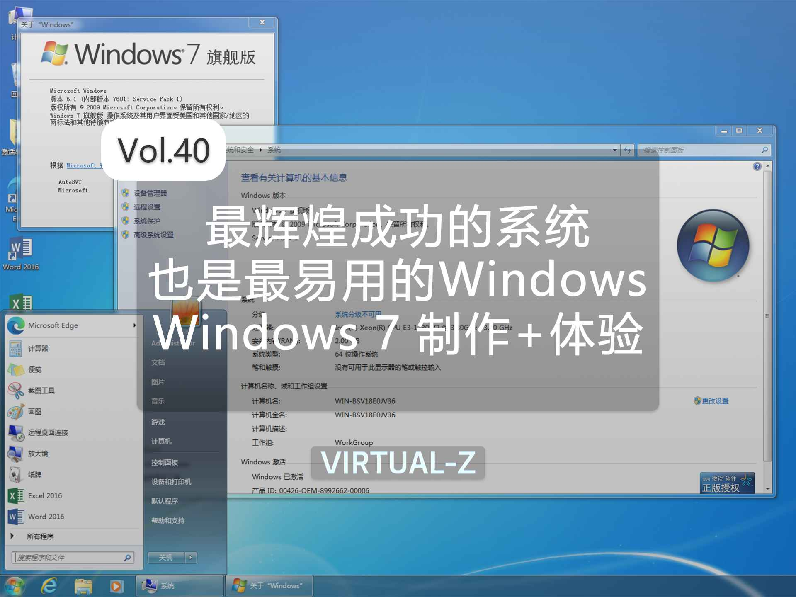
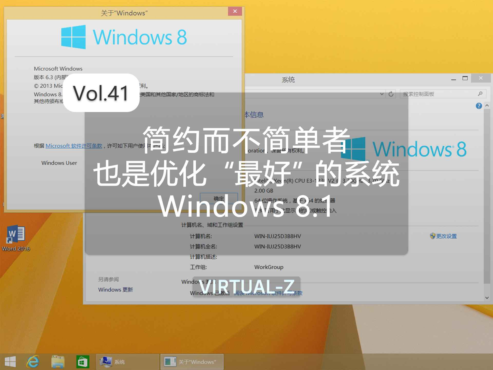
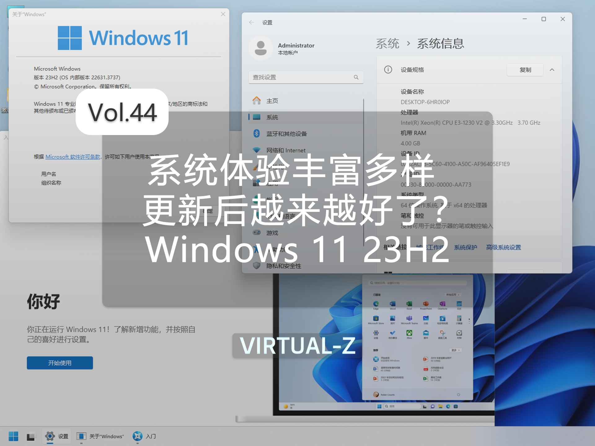
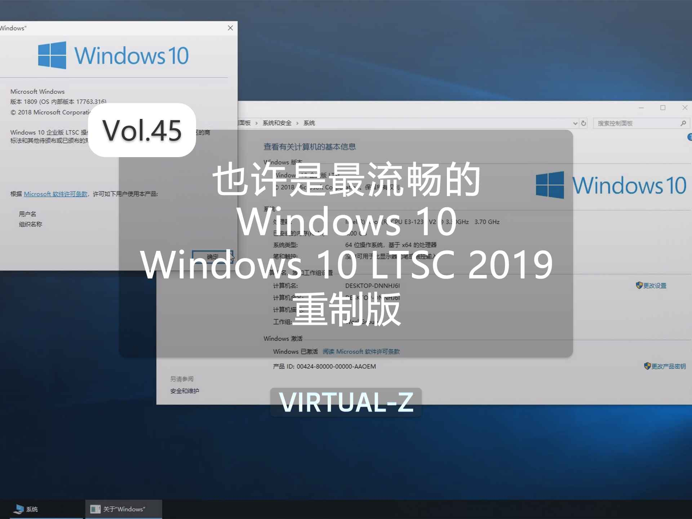

Z-OS新版
Z-OS是一个旨在提供纯净、稳定、流畅、便捷、免费和无束缚的操作系统。UP主将努力制作研究每一个镜像为每一位用户创造最好的使用体验。
请注意！
本站所有系统镜像及软件均来源于互联网，仅为个人学习测试使用，请在下载后24小时内删除。版权归原作者所有，不得用于商业用途，否则后果自负！请支持原版系统及软件！
Z-OS新版
图片展示



系统选择
图片展示


系统选择
本站所有系统镜像及软件均来源于互联网，仅为个人学习测试使用，请在下载后24小时内删除。版权归原作者所有，不得用于商业用途，否则后果自负！请支持原版系统及软件！
© 2024 Virtual-Z All rights reserved.